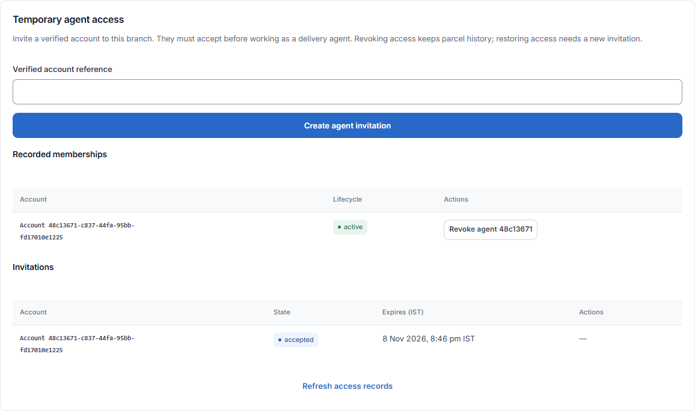

Temporary agent access
Allow a verified person to work as a delivery agent in this branch.

Before you start
You need permission to manage access and the agent’s verified account ID. Do not use their phone number or a parcel reference in place of that ID.
Invite the exact verified account
- Open Delivery, then Parcel custody, and expand Manage receiving agents. Temporary agent access appears only for staff allowed to manage it.
- Ask the account administrator for the exact verified account reference of the named person. This field accepts the saved 36-character account ID. It does not search by name or email, and a phone number cannot replace the account reference.
- Enter Verified account reference and select Create agent invitation. Check the success notice. The one-time invitation code is shown only in this session; share it securely with that same named account and select Hide invitation code when finished.
- The named person must accept within seven days. Creating an invitation does not activate access and does not promise an automatic invitation email or WhatsApp message.
- Recorded memberships shows each account and whether its access is active or revoked. Invitations shows the account, state and expiry in IST. Refresh access records updates both lists and hides the session’s invitation code.
- To revoke, choose the specific active agent or pending invitation. Check the account shown in the confirmation. Confirm revoke access or Confirm revoke invitation applies that choice; Keep access unchanged cancels it.
- If the outcome is uncertain, use Check current access outcome before another request. A pending invitation may already exist even if its code was not received. Codes cannot be recovered here: revoke the pending invitation and create a replacement when needed.
Quick steps
- Open Temporary agent access in the custody area.
- Enter Verified account reference and select Create agent invitation.
- Share the one-time invitation code securely with that named person. They must accept within seven days.
- Check Recorded memberships to confirm that access is active.
- To remove access, select Revoke agent or Revoke invitation, review the account, and confirm.
Fields on this screen
- Verified account reference: Required. The 36-character UUID of the named verified account.
- One-time agent invitation code: Read-only result after creating an invitation. Share securely only with the named person. Hide it when done.
What happens next
An invitation alone does not grant working access. The person must accept it. Revocation keeps parcel and custody history. Restoring access requires a new invitation.
If you get stuck
- Uncertain result: select Check current access outcome before sending a new request.
- Invitation code lost: the code cannot be recovered here. Revoke the pending invitation and create a replacement if needed.
- No access after inviting: check whether the person accepted and whether the invitation expired.
- Do not leave or switch branch while the app is reconciling an access change.
About this guide
Checked against the current app source on 1 November 2026. Buttons depend on your access and the current record. This guide does not give extra access.